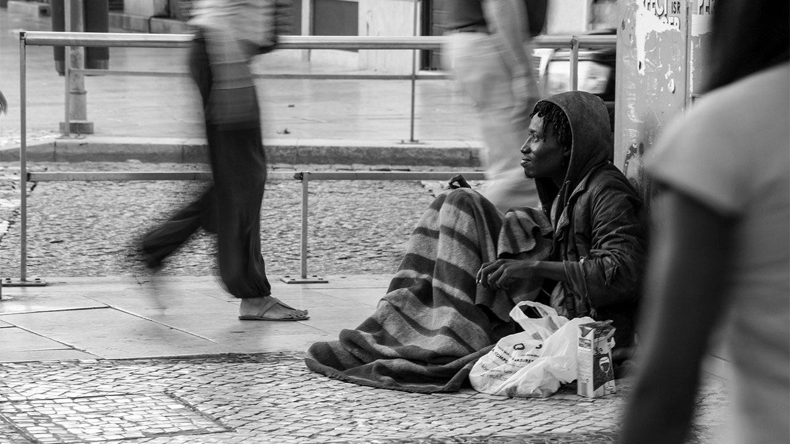

Resilience Story of New York
This story is a reflection on the struggles of New York State in dealing with COVID-19 pandemic that is complicated by social and economic inequity facts.Dark May 2020
The first cases in the U.S. were identified among travelers returning from Wuhan, China, in the middle of January 2020.
The coronavirus spread in the U.S. had drastically changed the way people live their daily lives. The COVID-19 cases in New York State, the epicenter of the pandemic in the U.S., was reported to reach nearly 343,705 in the time this web map is developed on May 13, 2020. The map shows the striking contrast between cases found in this state and those in other states.The figure below also displays the number of deaths of this state which is significantly higher than 2 other major states: Louisiana, Michigan, and Washington.

Pause Order
As the US grapples with the rapid spread of the coronavirus, the Governor Andrew M. Cuomo, ordered staying at home. People reacted to this differently. Some believed the order is inconstitutional, while others believed it is a necessary. The map shows the distribution of public response to the pause order retrieved from social media Twitter by using data-crawling technique

Public Outrage
The protest continues from social media to public streets. People flocked to streets, criticizing the governor's pause order and lockdow as they will create more economic problem and unemployment
 Protests often led to vandalism. At least nine shootingstook place in March 2020, causing at least 4 dead victims and 7 injured victims.
The map shows the distribution of FIREARM VIOLENCE RATES throughout the states. Note the highest violance rate of Bronx City which reaches nearly 905.1
among counties in this state.
Protests often led to vandalism. At least nine shootingstook place in March 2020, causing at least 4 dead victims and 7 injured victims.
The map shows the distribution of FIREARM VIOLENCE RATES throughout the states. Note the highest violance rate of Bronx City which reaches nearly 905.1
among counties in this state.

Violence and Poverty
Being one of the wealthiest states in the USA does not necessarily mean that this state is free from homelessness and poverty. NY States has the greatest income divide in the U.S. with ratio between the wealthiest and the middle income residents is 1 percent to 99 percent. The average income of the top 1 percent was $2.2 million in 2015, while the average income of the bottom 99 percent was $49,617. The map shows the Median household income level throughout the U.S. states in 2020.
Heroism
In this difficult time, heroism act increases. The map shows some of 150 food pantries that voluntarily provided free food in cities with highest economic gap, poverty, and violence firearm rate. These pantries are organized by church and social institutions, and surprisingly, by retired seniors whose services were then replaced by young people.
Many organizations are now providing shelters for homeless. During this time, they did not require homeless to show their ID. The map shows the distribution of the shelters for homeless in New York and Bronx cities.
The development of this storymap is possible due to the online and open sourced data contributions of New York State Government, U.S. Center of Disease Control and Prevention, Taylor DesOrmeau (mlive.com), Lazaro Gamio (New York Times), Orion Rummier and Rebecca Falconer (Axios), Robin Abcarian (Los Angeles Times),Julianne Malveaux (New Orleans Tribune), foodpantries.org, homelessshelterdirectory.org, the New Yorker, and guidance of Professor Bo Zhao in the University of Washington, Seattle.